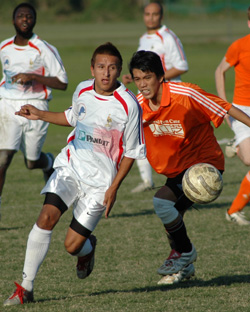
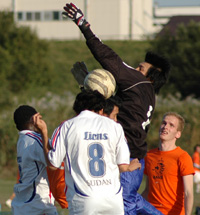

|
Misato, Sunday 21st October,
On a day where Lions were missing 1 or 2 key players in defence and midfield, the least worry should have been the attack. Dutch Embassy started with 8 players, and went up to 9 players after 15 minutes or so. Lions had 15 players, 7 of those are attacking players. Playing against an incomplete team should be difficult, because of sitting back, meaning less chances created. BUT!, that wasnt the case! Dutch Embassy had 1 attempt at goal and a couple of corners throughout the game, with Lions creating enough chances to give Dutch Embassy a negative goal difference that would take them 2 seasons to recover from!
Strikers that are usually in form, and never miss, had one of their worst days. Credit to the Dutch Embassy keeper, he saved a handful of shots, most of them straight at him.
• Scraping the post,
• hitting the side-netting,
• wasted free-kicks,
• wasted corners,
• misses from 3 yards out,
• clearances of the line,
• headers over the bar,
• mis-kicks, shots off target,
• balls across a gaping goal,
• one-on-ones
• and even penalty misses!
 All the above happened on a regular basis throughout the game! Lions even played a 4-1-5 at some stage, and struggled to add to the first half goal until Ken managed to slot in one of the more difficult chances with a few minutes to go, only to see AbuBakr place his penalty kick about a metre above the bar!
All the above happened on a regular basis throughout the game! Lions even played a 4-1-5 at some stage, and struggled to add to the first half goal until Ken managed to slot in one of the more difficult chances with a few minutes to go, only to see AbuBakr place his penalty kick about a metre above the bar!
Other teams watching couldnt beleive the amount of chances created, and definetely couldnt beleive seeing them all wasted. Lions were missing Gaafar Somi, and Samawaal who surely would've had a thing or 2 to say to the strikers on the day.

3 points in the bag, but Lions have to take their chances or sooner or later they may be punished. Still, Lions are the only team in all 3 Divisions yet to concede a goal, thanks to an improving defence and a brilliant keeper, who may have been on the scoring sheet if he was on the end of one of the 100 chances created on Sunday!
Credit to Lions defence who played well, and to an oustanding performance by the debutant in midfield, Fahad, who most of the game controlled the midfield on his own. Fahad's performance will earn him a regular place, and the possibility of having him playing alongside Gaafar Somi in midfield would probably create the best central midfield duet.
Man of The Match: Fahad
Report by Hussein Shehata
|